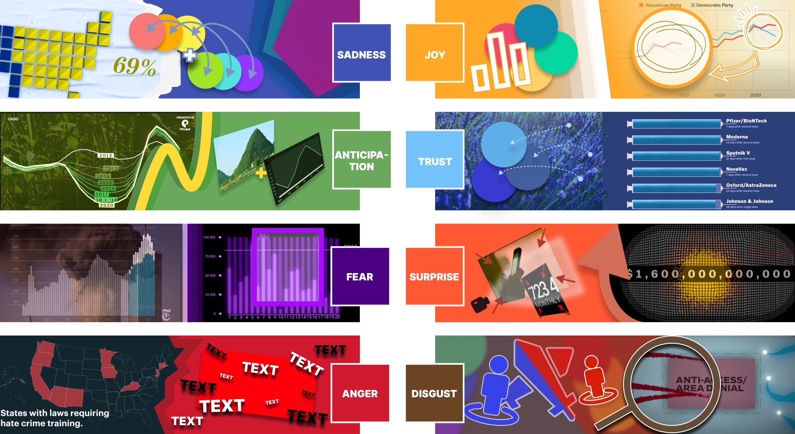

At The Peak: Guidelines For Creating Climaxes In Data Videos
Data videos are becoming a prominent medium in society and academia, especially for conveying complex information through narrative structures. However, there is still limited understanding of how to design the narrative climaxes in these videos to maximize emotional engagement and impact. To address this gap, our work leverages emotional theory to develop comprehensive guidelines for crafting emotionally resonant climaxes in data videos. We analyzed 96 data video climaxes, categorizing them into eight emotional types based on Plutchik’s model of basic emotions. From this analysis, we formulated 40 guidelines for enhancing narrative climaxes. To validate these guidelines, we conducted a user study where 32 participants designed data video climaxes with and without them. Evaluations by 4 experts and 20 general audience members revealed that climaxes created with the guidelines were more emotionally engaging, impactful, and memorable. Participants also praised the guidelines' clarity and practicality in the design process.
Sadness
G1.1 Distancing by Pulling Away
- ✏️Zoom in to focus on specific sad data points, such as rising unemployment rates or key charts showing economic downturns.
- ✏️Zooming out provides a broader view, displaying the full scope of the situation and emphasizing feelings of loneliness or helplessness.
- 🔊Accompany zoom-ins with low and slow musical tempos; as the camera zooms out, the music gradually fades, suggesting that the emotions are dissipating into the vast space.
G1.2 Sadness Echo
- ✏️As the data, exemplified by charts indicating economic recession, demonstrate a decline, employ camera movement to trace the trajectory of the data, effectively creating a visual sensation of descending. This technique metaphorically represents the fall, enhancing the viewer's perception of decline.
- 🔊Complement the visual depiction of descending data with a progressively softening string music background. This approach uses the diminishing volume and tempo of the music to symbolically represent the fading of hope, thereby deepening the affective on the audience.

G1.3.1 Cool Colors for Emotion
- ✏️Utilize cool color tones, such as deep blue and gray, to effectively underscore downward trends or negative outcomes in data visualizations. These color changes are intended to mirror emotional transitions within the narrative.
- 🔊Coordinate the transition of visual colors from warm to cool with a corresponding shift in audio tones to enhance the narrative's emotional landscape.
G1.3.2 Contrasting Colors and High Saturation
- ✏️In the visualization of data, employ black text against complementary colors—such as red against green or blue against orange—to accentuate key data points. This should be set against a background of low saturation to draw viewer focus and amplify the affective of these points.
- 🔊Emphasize the sadness through changes in sound rhythm and volume combined with colors.
G1.3.3 Consistency in Color Depth and Emotional Semantics
- ✏️Convey sadness through variations in color depth and ensure that the proportion of semantically appropriate colors in the frame is suitable to directly resonate with the audience.
- 🔊Additionally, incorporate sound design that matches the semantics, such as adding the sound of coins dropping when yellow coins appear on the screen, to highlight the issue of wealth disparity and evoke sadness in the audience.
G1.4 Memory Loop
- ✏️Combine real news clips, historical archive images, and animated data charts to tell a sad story, such as the impacts of war, natural disasters, or economic crises.
- 🔊Enhance the emotional depth of multimedia elements with on-site recordings, sad background music, and related sound effects, such as crying or heartbeat sounds
G1.5 Data Point Loop
- ✏️ Continuously increase an element in the frame (such as icons representing unem- ployment numbers) to visualize the worsening of the problem.
- 🔊 As the elements increase, the sound effects gradually intensify, such as increasingly loud bell or alarm sounds, suggesting the urgency and severity of the issue.
Anticipation
G2.1 Anticipatory Action
- ✏️Use zoom-in to focus on soon-to-be-revealed important data points, such as breakthroughs in technology or upcoming events. Zoom out to provide a broad background of anticipation, such as the opening of a major event.
- 🔊Use progressive music or sound effects when zooming in to increase the sense of anticipation; as you zoom out, the music reaches a climax, expanding the scope of expectation.
G2.2 Dynamic Prediction
- ✏️The camera follows the dynamics of rising data, such as a stock market forecast index, visually simulating a rising sensation.
- 🔊Accompany the visual dynamics with gradually intensifying instrument sounds, such as trumpets or strings, signaling the impending changes.
G2.3.1 Use bright and high-contrast colors
- ✏️Employ white text on dark or colored backgrounds to symbolize light and hope, while using high-contrast color combinations (such as black on white or red on white) to enhance visual impact and convey anticipation.
- 🔊Building on this, the sound design usually transitions to a new, more lively BGM to indicate a shift towards a more positive emotion.
G2.3.2 Dynamic color changes and symbolic meanings
- ✏️Transition from monochrome to multicolored to symbolize the process from monotony to diversity, sparking viewer curiosity and anticipation. Use symbolically significant, high-saturation colors (like blue for dreams, green for growth, yellow for vitality) to strengthen the mood of anticipation and incorporate dynamic color changes (such as gradients or flickers) to increase visual appeal.
- 🔊The sound rhythm quickens to match the change in colors from singular to diverse, thereby showcasing a sense of anticipation.
G2.4 Future Symbols
- ✏️Add text or symbols that presage the future, for example, use animated clipart to display clear visual symbols that convey anticipation.
- 🔊Use melodies full of anticipation, such as hopeful tunes or architectural music pieces.
G2.5 Narrative Revelation
- ✏️Combine similar shapes (data curves with real objects); historical material real images; historical videos combined with contemporary sounds.
- 🔊Blend futuristic sound effects, such as synthesizer tones, to enhance the sense of foresight and innovation, or opt to use original sounds from historical materials or interviews.
Fear
G3.1 Imminent Threat
- ✏️Use zoom-in to focus on unsettling data points, such as charts of disease outbreaks or sharp declines in financial markets. Zoom out to display the broader crisis scenario.
- 🔊Utilize tense strings and abrupt sound effects like sharp piano notes or percussion to increase the tension, or add sounds of breaking glass, car crashes, sirens, and explosions to enhance the sense of instability.
G3.2 Shaking Tension
- ✏️The camera follows the movement of the data, showing rapid declines or tremors to simulate a feeling of panic.
- 🔊Fast-paced rhythms with intermittent sound effects such as breathing or heartbeat sounds, or additional unsettling effects like breaking glass, car crashes, sirens, and explosions to mimic anxious emotions.
G3.3.1 Cold Color Fear Visual Effects
- ✏️Use warning colors such as red and black or highly bright color changes to emphasize danger or negative trends.
- 🔊Accompany color changes with deep, heavy background sounds, like bass violins, to enhance the feeling of insecurity.
G3.3.2 Dynamic Elements and Visual Impact
- ✏️Display the growth and urgency of threats through dynamic elements (such as a rising blue sea level) and strong visual impacts (such as a red curve extending to an explosion icon). Use high-saturation colors, especially red, to attract attention and provoke strong emotional responses.
- 🔊The sound employs a fast-paced, oppressive background music.
G3.4 Shadow Flickering
- ✏️Use rapid editing techniques combined with real news reports, expert interviews, emergency broadcasts, and dynamic data charts to present emergency situations or crises, creating a sense of unease.
- 🔊Intertwine live sound effects from news reports, emergency broadcast alarms, and tense music to intensify the crisis atmosphere.
G3.5 Threat Amplification
- ✏️Accumulate the same data, such as an increase in case numbers, shown by multiplying virus icons on the screen.
- 🔊As on-screen elements increase, amplify the volume and intensity of sound effects, like loud and chaotic ambient noises, to simulate the spread of panic.
Anger
G4.1.1 Use of Red and High-Contrast Text
- ✏️Employing white or black text against a red background creates a strong visual contrast, quickly drawing attention and evoking feelings of anger, while also enhancing the sense of urgency and impact of the information.
- 🔊Add sound effects to assist as textual information appears, emphasizing new points and enhancing the sense of anger.
G4.1.2 High Saturation Base Colors and Dynamic Color Changes
- ✏️Utilizing vivid, high-saturation base colors like orange, combined with dynamic changes in color such as deepening hues or increasing curves, symbolizes escalating issues, further intensifying emotions of anger and dissatisfaction.
- 🔊As the hues deepen and the dynamic colors change, the volume gradually increases, intensifying the sense of anger from an auditory perspective.
G4.2 Visual Impact
- ✏️Employ sudden visual impacts such as rapid flashing images or the abrupt appearance of large text to simulate the eruption of anger.
- 🔊Use sudden, loud explosion sounds or screams, synchronized with the visual impact, to intensify the sense of sudden anger.
G4.3 Dynamic Anger
- ✏️Quickly zoom in/out to show dramatic changes in data, such as sharp increases or decreases in prices, using dynamic charts to represent the causes of anger.
- 🔊Accompany the intense fluctuations in the charts with escalated sound effects, such as accelerated heartbeat sounds or enhanced wind noises, reflecting tension and dissatisfaction.
G4.4 Layering Elements
- ✏️Continuously add visual elements of accusation or protest, such as banners of protesters or angry faces.
- 🔊Include background noises of crowd uproar, chants, or protest sounds to make the angry social backdrop more pronounced and realistic.
Joy
G5.1 Vibrant Color Utilization
- ✏️Implement warm tones such as red and yellow to evoke energy and positivity. Utilize high contrast combinations like blue background with black text or white background with green dots to effectively highlight key data and information, ensuring they capture the viewer’s attention.
- 🔊Integrate high-tempo and high-pitch musical elements such as cheerful piano tunes or lively strings to reinforce the positive atmosphere.
G5.2 Dynamic Data Presentation
- ✏️Employ zoom techniques in conjunction with dynamic graphical repre- sentations such as bouncing or dancing bar charts, and explosive scatter plots. These elements should visually represent positive changes in the data, enhancing viewer engagement and understanding.
- 🔊Accompany the dynamic charts with cheerful sound effects, like bouncing notes or light percussion, making the data presentation more vibrant and entertaining.

G5.3 Fast Rhythm Shots
- ✏️Increase visual vitality and joy by using quick camera switches or rhythmically strong camera movements, such as swinging or spinning.
- 🔊Pair these fast camera movements with rapid-paced music and sound effects to enhance the video's dynamic feel and cheerful atmosphere.
Trust
G6.1 Tranquil Scanning
- ✏️Employ smooth camera movements such as slow horizontal sweeps or gentle zooms to foster a sense of peace and acceptance.
- 🔊Complement this with subdued background music, like low-key strings or soft flute sounds, emphasizing inner tranquility and harmony.
G6.2.1 Integrating Natural Elements
- ✏️Use harmonious color combinations, such as blue and green, which are typically associated with calmness and nature.
- 🔊Incorporate natural sounds, like the whisper of the wind, flowing water, or birdsong, to further enhance the atmosphere of harmony and tranquility.
G6.2.2 Information Differentiation Through Color Depth
- ✏️Differentiate the importance of information through variations in color depth; use darker colors for critical explanatory sections to build trust and lighter colors for contrasting details to help viewers distinguish between primary and secondary information.
- 🔊Highlight the primary and secondary information contrast under colors through changes in sound rhythm.
G6.3 Cyclical or Repetitive Visual Elements
- ✏️Use cyclical or repetitive graphics and animations, such as looping shapes or periodically appearing visual elements, to symbolize acceptance and understanding.
- 🔊Feature recurring melodies or rhythms in the background music to reinforce themes of acceptance and provide a reassuring atmosphere.
Surprise
G7.1 Sudden Visual Changes
- ✏️Employ zoom in/out techniques with sudden visual transitions or rapid image changes, such as quickly expanding data charts or unexpected graphical appearances.
- 🔊Synchronize sudden sound effects with the visual changes, such as drum hits or sharp bell sounds, to enhance the sensation of surprise.
G7.2 Color Burst
- ✏️In maps or charts, use blue to represent symbolic meanings, allowing the color to increase continuously, with variations in shade indicating levels of trust. The dispersal and gathering of colors symbolize the dynamic flow of data, stimulating viewer curiosity and surprise.
- 🔊Introduce distinct sound effects as the colors change, such as shifting from soft music to dramatically intense tones.

G7.3 Contrary Data Trends
- ✏️Start with camera movements that follow the trends of data movements. As time progresses, the camera movements begin to contrast with the data trends.
- 🔊Initially, maintain a consistent sound design; as the camera and data movements diverge, introduce a noticeable difference in the sound rhythm.
G7.4 Unexpected Visual Elements
- ✏️Introduce unexpected elements or characters, such as suddenly appearing animated characters or graphics, to break away from conventional data presentation styles.
- 🔊Accompany these unexpected visual elements with surprising sound effects or changes in the theme music, such as humorous, whimsical music or sounds of astonishment, to increase audience curiosity and interest.
Disgust
G8.1 Negative Focus
- ✏️Zoom in to focus on unpleasant data points or images, such as areas with high pollution levels. Zooming out reveals the overall adverse effects.
- 🔊Use discordant tones or harsh sound effects to increase discomfort.
G8.2 Dynamic Disgust
- ✏️Slow camera movement over displeasing images or data, such as piles of trash or the spread of pollution shown dynamically.
- 🔊Low and slow music, or unpleasant noises like chewing sounds or the sound of slime.
G8.3 Discomfort Color Change
- ✏️Use contrasting colors and a gray background: Symbolic color semantics signify conflict or opposition, such as the red and blue representing the two main political parties in the USA, while a gray background conveys a dull or boring feeling, providing contrast to the high saturation focus points, thus highlighting the repulsive data or information.
- 🔊As the colors transition unpleasantly, the sound becomes rougher, using low frequencies and noise.
G8.4 Mixed Media
- ✏️Blend inappropriate images, videos, and charts, such as actual footage of a landfill integrated with pollution data charts.
- 🔊Combine ambient noise, displeasing background music, and alert tones to intensify the feeling of disgust.
G8.5 Incremental Elements
- ✏️For example, show the increase in the amount of trash by increasing the number of trash heap icons in the visuals.
- 🔊As elements increase, amplify the complexity and discomfort of the background noise, such as increasingly loud traffic noise.